Застосунок клієнта
Повний посібник для клієнтів — знаходьте букети на мапі, керуйте кошиком, оформлюйте замовлення й відстежуйте доставки.
Переглянути букети
Мапа букетів (гість)
Головний екран пошуку. Інтерактивна мапа показує мітки букетів поблизу вибраного місця. Панель фільтрів (ліворуч) дає змогу шукати за адресою, обрати радіус пошуку (1–15 км) і використати GPS пристрою. Кожна мітка з квіткою — доступний букет; натисніть її, щоб побачити вікно з фото, ціною, назвою продавця й кнопкою Додати до кошика .
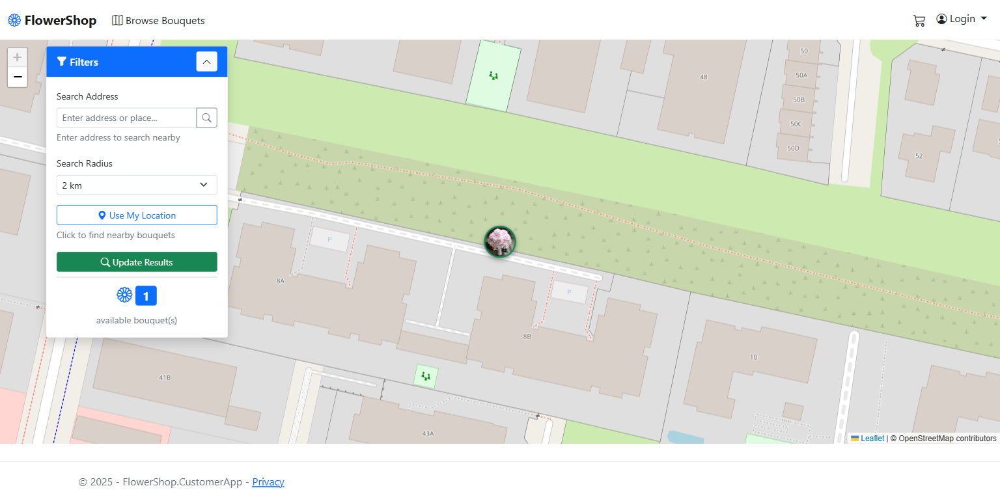
Мапа букетів (після входу)
Той самий вигляд мапи після входу. Панель навігації тепер показує Замовлення, Улюблені, Підписки й значок кошика. Ел. пошта облікового запису — в меню користувача вгорі праворуч.
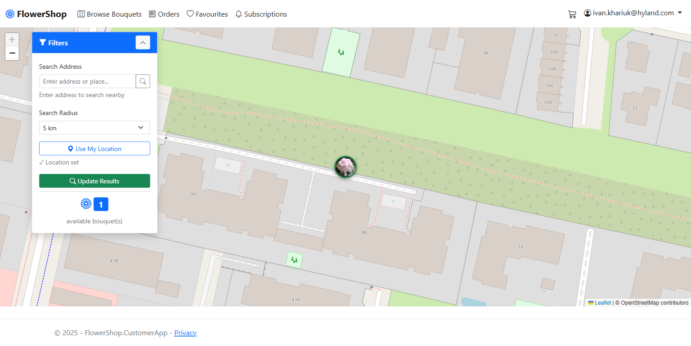
Деталі букета
Повна сторінка одного букета: велике фото, назва, опис, ціна, інформація про свіжість, профіль продавця з оцінкою в зірках і відстань від вашого розташування. Натисніть Додати до кошика , щоб купити, або значок серця, щоб зберегти в улюблених.
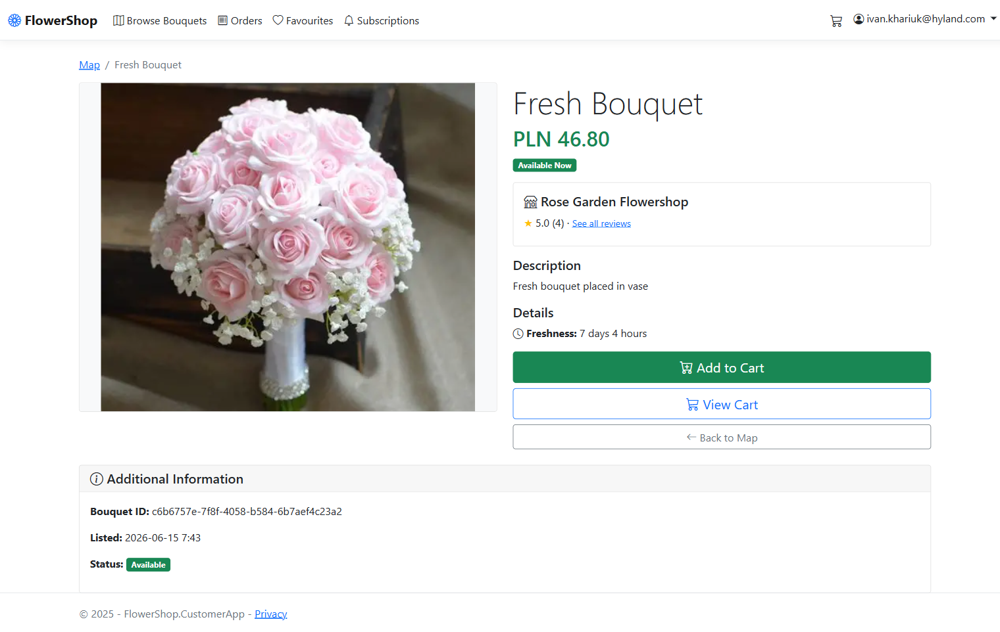
Вхід
Вхід через Keycloak
FlowerShop використовує Keycloak для безпечного входу. Введіть зареєстровану ел. пошту й пароль або натисніть Зареєструватися , щоб створити новий обліковий запис. Ви потрапляєте сюди автоматично, коли відкриваєте захищену сторінку (Кошик, Замовлення, Профіль).
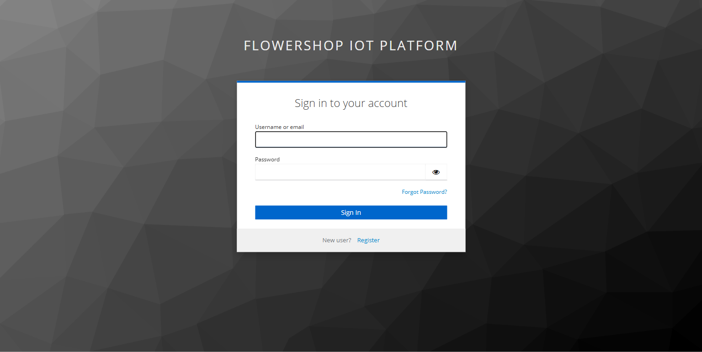
Покупки
Кошик
Кошик показує всі вибрані букети з фото, назвами, продавцем, ціною за одиницю й проміжною сумою. Усі позиції мають бути від одного продавця — букет від іншого продавця починає новий кошик. Натисніть Оформлення , щоб перейти до оплати.
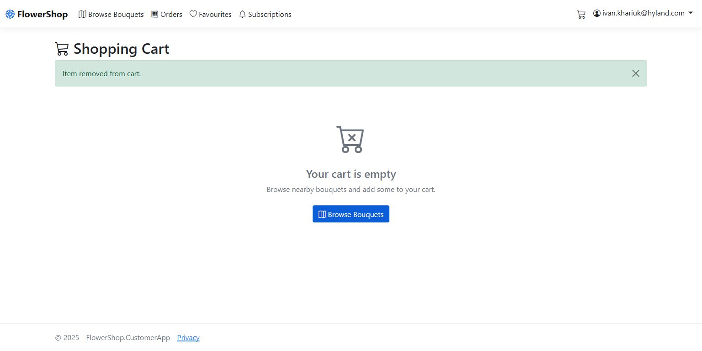
Мої замовлення
Історія замовлень
Повна історія всіх ваших замовлень. Фільтруйте вкладками статусу: Усі / Очікує / Оплачено / Готується / У доставці / Завершено / Скасовано. Кожен рядок показує ID замовлення, дату, кількість позицій, суму й поточний статус. Натисніть Деталі , щоб відкрити повний вигляд замовлення.
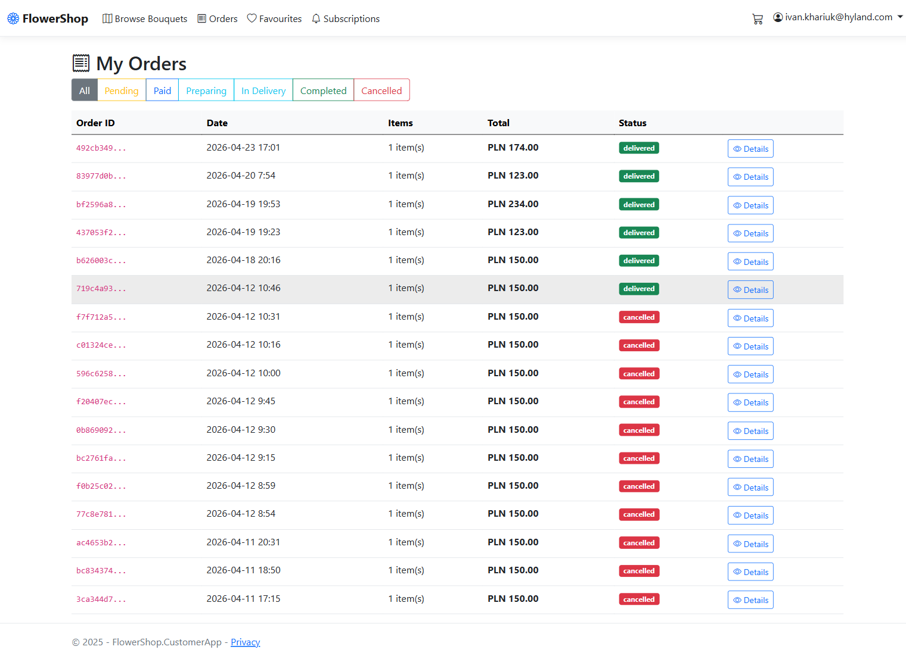
Деталі замовлення
Детальний вигляд одного замовлення: фото букета, назва, продавець, ціна, адреса доставки, номер платежу й часова шкала з кожним кроком від оформлення до доставки.
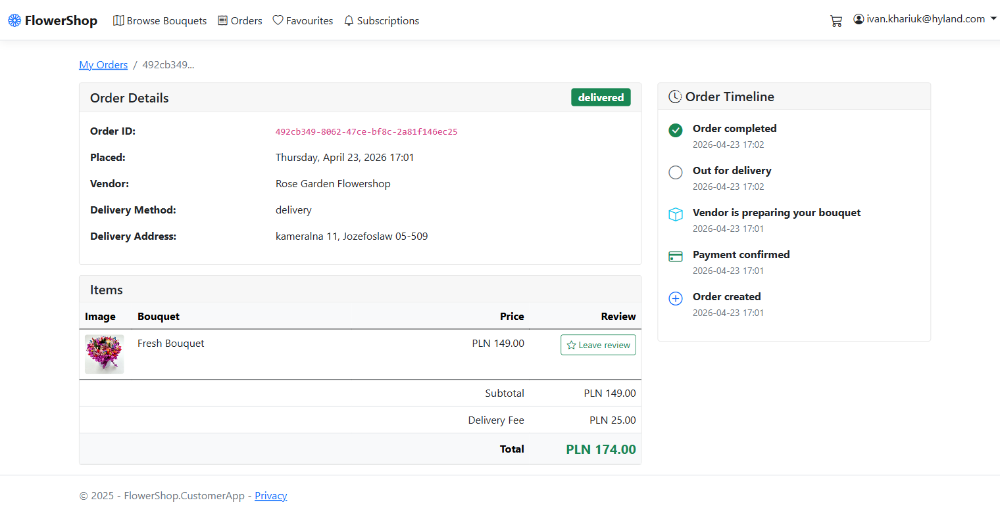
Мій обліковий запис
Улюблені
Ваші збережені улюблені букети. Натисніть значок серця на будь-якому букеті чи картці продавця, щоб додати їх сюди. Ця сторінка допомагає швидко замовити знову в продавців, у яких ви вже купували.
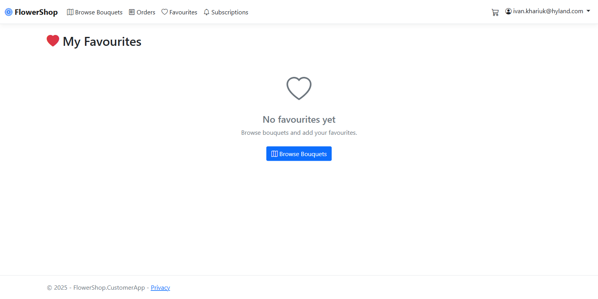
Підписки
Керуйте підписками на продавців. Підписка означає, що ви отримуватимете push-сповіщення, коли продавець виставить нові букети поблизу. Вмикайте й вимикайте підписки в цьому списку.
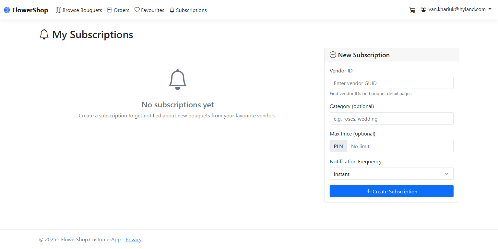
Мій профіль
Ваші особисті дані: ім’я, ел. пошта й номер телефону. Підтримуйте їх актуальними, щоб продавці могли зв’язатися з вами щодо замовлень.
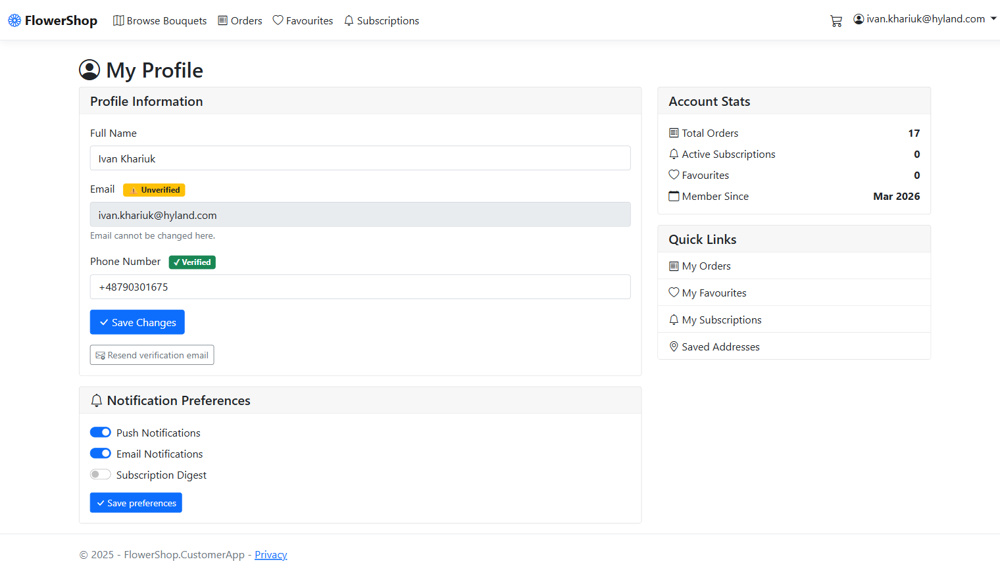
Збережені адреси
Керуйте адресами доставки для швидшого оформлення. Додавайте, редагуйте або видаляйте адреси й позначте одну як основну. Основна адреса підставляється під час оформлення.
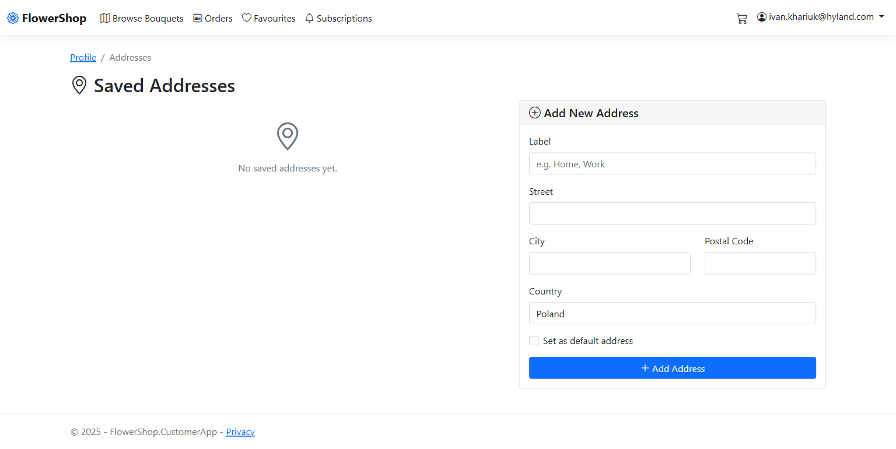
Запити на букети
Запит на букет
Натисніть Запит на букет в меню, щоб попросити флористів поблизу про букет, який ви уявляєте. Додайте 1–5 фото-зразків (наприклад, фото, яке вам сподобалося), опишіть, чого хочете, установіть бюджет, привід і розмір, оберіть час (щонайменше за 3 години) і доставку або самовивіз. Оберіть збережену адресу або введіть нову й поставте мітку на мапі. Натисніть Опублікувати: флористи в зоні дії отримають сповіщення. Вони бачать ваші фото, примітку, бюджет і лише приблизний район — ніколи адресу чи ім’я, доки ви не оплатите.
Порівняйте пропозиції й оплатіть
Мої запити показують кожен запит і його пропозиції. Сортуйте пропозиції за ціною, часом або відстанню; кожна показує флориста, оцінку, ціну з доставкою, час готовності й доставки, примітки й фото. Натисніть Прийняти біля однієї пропозиції, щоб одразу перейти до оплати — у вас є 30 хвилин на оплату, інакше інші пропозиції повертаються. Усі інші пропозиції відхиляються автоматично. Запит можна скасувати до прийняття пропозиції.
Стежте за своїм індивідуальним замовленням
Після оплати запит показує зворотний відлік і прогрес флориста (виконується, готово, доставляється, доставлено або забрано). Якщо флористу потрібно більше часу, ви побачите запропонований час: прийміть його або — якщо він пізніший більш ніж на годину — скасуйте з повним поверненням коштів. Якщо ви не відповісте протягом 30 хвилин, новий час буде прийнято. Якщо замовлення запізнюється понад 2 години, його можна скасувати з повним поверненням коштів. Сповіщення про запити також з’являються серед ваших сповіщень.
Букети лише з доставкою
Букети лише з доставкою
Деякі флористи продають лише онлайн: у них немає крамниці, куди можна прийти. Їхні букети мають мітку Лише доставка на мапі й на сторінці букета, а розташування на мапі приблизне. Ви бачите їх лише в межах їхньої зони доставки.
Замовлення букета лише з доставкою
Додайте його до кошика як зазвичай. Під час оформлення Самовивіз недоступний: введіть адресу доставки, перевірте вартість доставки й оплатіть. Букет лише з доставкою не можна замовити разом із букетом, який ви забираєте в крамниці. Якщо хтось купить його за мить до вас, ви побачите, що він більше недоступний, — видаліть його з кошика й оберіть інший.